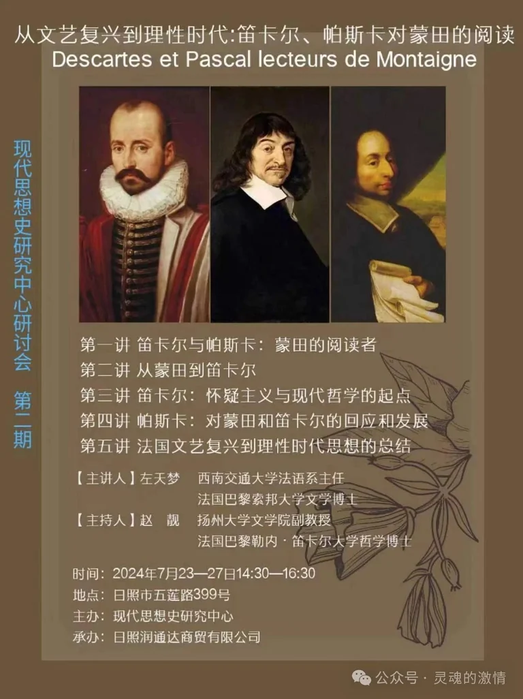
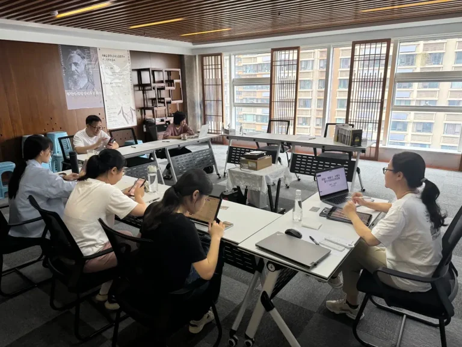
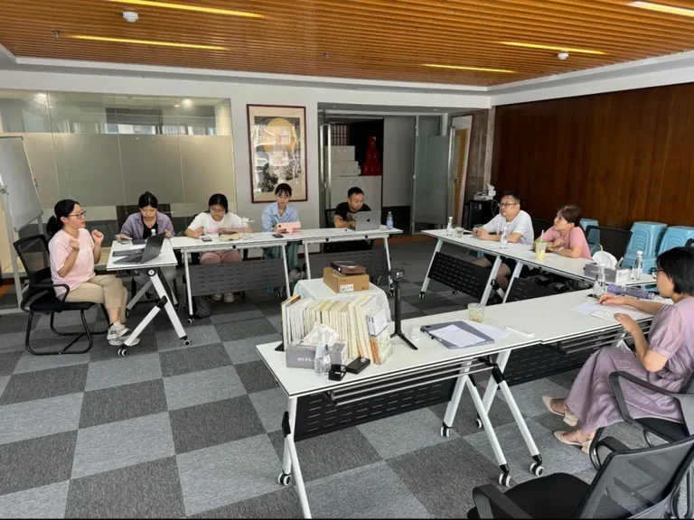

系列活动概述
2024 年 7 月 23 日至 26 日，现代思想史研究中心举办“从文艺复兴到理性时代：笛卡尔、帕斯卡对蒙田的阅读”系列讲座。主讲人为左天梦，法国巴黎索邦大学文学博士、现任西南交通大学外国语学院法俄系主任和讲师；主持人为赵靓，法国巴黎勒内·笛卡尔大学哲学博士、现任扬州大学文学院副教授。刘铭、滕光伟等中心成员也参与了本次活动。
纪要表明，这组讲座并不把笛卡尔、蒙田和帕斯卡拆成三个孤立人物，而是把他们与布朗什维克的阅读重新连在一起，通过“理性”概念的生成史来重新组织文本关系。
四讲结构
- 第一讲： 从布朗什维克的生平与著作切入，说明“理性”如何成为其一生哲学工作的核心关键词，并引出《笛卡尔与帕斯卡：蒙田的阅读者》这一整组讲座的关键文本。
- 第二讲： 转向蒙田《随笔集》，讨论其写作方式、创作目的与哲学史中的独特姿态，为后续理解笛卡尔和帕斯卡奠定背景。
- 第三讲： 讨论笛卡尔如何在蒙田背景下处理怀疑主义问题，并逐步推进到“我思故我在”的第一原则，以此展示理性主义如何重新建构自身。
- 第四讲： 聚焦帕斯卡对蒙田与笛卡尔的回应，特别强调他如何在科学与信仰之间为“人”的问题开出另一条道路。
讲座重点
从纪要来看，整个系列的核心并不是简单比较三位思想家，而是追问一个更深的问题：现代“理性”是如何在怀疑主义、科学革命与宗教经验之间被塑造出来的。布朗什维克的研究方法、蒙田的问题意识、笛卡尔的推理论证与帕斯卡的人学视角，在这里构成了一条连续的思想史线索。
这组讲座通过连续阅读与多场递进的结构，呈现了现代“理性”概念在文本传统、科学革命与宗教经验之间的生成过程。
问题讨论
提问环节中，左天梦老师特别说明：19 世纪下半叶以来科学思维与哲学逐渐分离，是布朗什维克得以从科学哲学角度重读哲学史的重要背景；至于“蒙田是否怀疑上帝”之类问题，则必须谨慎回到文本记录本身。纪要也提到，讲座同时鼓励参与者跨越学科边界，扩大阅读范围，而不是把哲学训练局限在狭窄领域内。
纪要最后注明，系列讲座于 2024 年 7 月 26 日下午 4 点结束，整体取得了良好的学术与社会反馈。
活动照片

